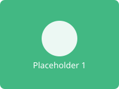
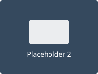
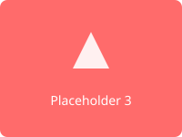

Dashboard Overview
This Next.js SSR fixture contains multiple components with realistic DOM structure to test web-clone SPA crawling capabilities. It uses static export for pre-rendered output with __NEXT_DATA__ hydration payload.
5Components
30+Elements
3Images
3Sections
Key Features
- Static site generation with Next.js export
- Client-side hydration with __NEXT_DATA__
- CSS Modules for scoped styling
- Image resources for sub-resource download testing
- Multiple component sections with varied DOM structure
Resources


